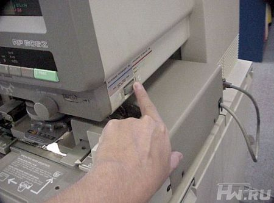
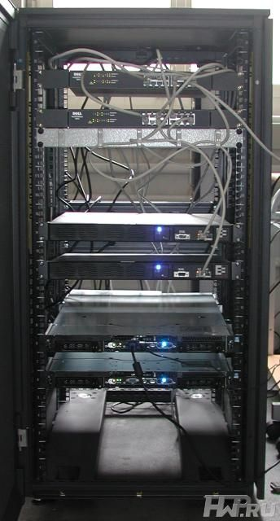
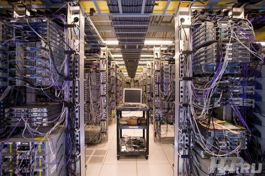
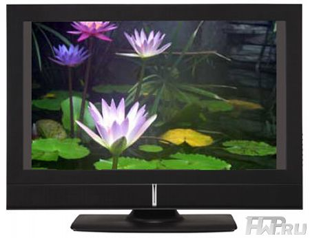
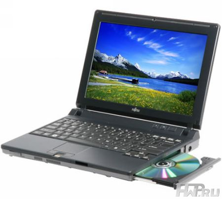
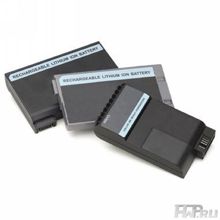
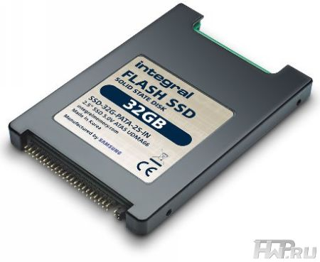
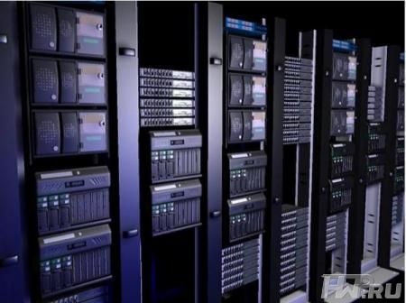

Энергосбережение и компьютер

Сегодня многие компании в той или иной степени ощущают проявления энергетического кризиса. Как следствие, многие из них ищут пути обуздания дальнейшего повышения затрат на электроэнергию и параллельно принимают участие в решении вопросов глобального изменения климата. Но как узнать, насколько эффективны энергосберегающие стратегии, применяемые вашей компанией? В этой статье мы развенчаем 10 самых популярных мифов об энергосберегающих технологиях.
Миф 1. Частое включение-выключение питания снижает срок службы компьютера или сервера: экстремальные температуры и возникающие при этом большие токи разрушают электронные компоненты (особенно конденсаторы и диоды).
В действительности, включение и выключение не являются большим стрессом для современной электроники. Те же комплектующие, которые используются в IT-оборудовании, применяются и в более сложных устройствах, работающих подчас в довольно жестких условиях: например, в заводских цехах предприятий, медицинских устройствах или автомобилях.

Но есть в этом мифе и доля истины: включение-выключение питания в компьютерных системах позволяет выявить "слабое звено" - скрытые слабые компоненты, которые остались незамеченными при тестировании и регулярной деятельности. Такая "диагностика питанием" быстра и точна, кроме того, ее можно выполнять удаленно.
Миф 2. Слишком много времени уходит на "холодный старт" серверов. Если заставлять клиентов ждать, они уйдут к конкурентам.
В действительности, работа сервера с нулевой нагрузкой – вопиющая растрата энергии и дополнительные расходы на администрирование. Если пользователям следует подождать, пока вы запустите холодное "железо" – просто сообщите им об этом. Например, можно сделать специальную статическую страницу на веб-сайте, где вы просите пользователей подождать, пока будут задействованы дополнительные онлайновые ресурсы.

Кроме того, сервера разных моделей и брендов значительно отличаются по времени запуска. Вы можете выбрать системы, которые осуществляют "холодный старт" достаточно быстро. Сложность состоит в том, что этот параметр не всегда измеряется и не всегда указывается производителем. Но если вы планируете снижать энергопотребление системы путем отключения мощности, для вас он чрезвычайно важен. Серверы и blade-серверы, которые загружаются из снапшота (snapshot) - копии RAM, считываемой с диска или SAN – затрачивают на переход из выключенного состояния в рабочий режим менее минуты.
Миф 3. Номинальная мощность CPU является мерой эффективности системы.
В действительности, эффективность измеряется процентным соотношением преобразованной мощности к потребляемой: она составляет от 50 до 90%, иногда более. Переменный ток, который не преобразовался в постоянный ток, теряется в виде тепла. Это увеличивает расходы на охлаждение системы и, соответственно, затраты на электроэнергию. К сожалению, зачастую сложно судить об эффективности преобразования энергии, и многие производители не публикуют эти данные. Вы можете или поискать системы с опубликованными коэффициентами эффективности, или измерить КПД различных систем в холостом режиме и при полной загрузке и принять решение, исходя из этого.
Миф 4. Лучше "нафаршировать" по максимуму RAM, процессорами и периферией один большой сервер, чем использовать несколько более мелких серверов.
В действительности, это справедливо лишь в том случае, если большой сервер используется по максимуму (что нежелательно при работе с некоторыми важными приложениями). В остальных случаях небольшие серверы более оптимальны: когда они не используются, их можно выключать или переводить в экономичный режим, кроме того, они более безопасны с точки зрения возможности защиты от сбоев путём дублирования основных устройств системы.

Также популярны системы, состоящие из нескольких ядер процессоров и RAM: они используют существенно больше мощности, чем базовая конфигурация одного двухядерного процессора и одной среднестатистической RAM. Подгоняя конфигурацию сервера к предполагаемому программному обеспечению, с которым он будет работать, вы сможете сэкономить электроэнергию, не прибегая к экстремальным мерам.
Миф 5. LCD мониторы расходуют минимум энергии, поэтому можно держать их включенными. Их цвета и яркость подсветки улучшаются с разогревом.
В действительности, энергопотребление среднестатистического 17-дюймового LCD монитора составляет 35 Вт.

Учитывая, что на крупных предприятиях могут быть сотни LCD мониторов, суммарный расход энергии становится заметным. LCD мониторы, удовлетворяющие стандарту Energy Star, могут переключаться в спящий режим по команде софта, управляющего энергопитанием. Это обеспечивает экономию с каждого монитора от $10 до $40 в год. Конечно, больший эффект обеспечит простое выключение монитора, но и $10-40 в год с одного устройства – реальная экономия для больших предприятий. Кстати, даже если LCD монитор выключен, он продолжает потреблять энергию: от 1 до 3 Вт. Единственный способ снизить расходы до нуля – отключить кабель питания. Что же касается "времени разогрева", то оно гораздо короче, чем полагают многие. А LCD мониторы со светодиодной подсветкой (в отличие от флуоресцентной) не нуждаются в разогревании вообще.
Миф 6. Ноутбуки не потребляют энергию в ждущем или спящем режиме.
В действительности, спящий режим (Sleep) в Vista и ждущий режим (Standby) в XP сохраняют состояние системы в RAM и затем удерживают образ RAM: на это тратится от 1 до 3 Вт. В режиме гибернации (Hybernation) состояние системы сохраняется на жесткий диск, что существенно снижает время загрузки. Энергопотребление в режиме гибернации составляет меньше 1 Вт. Разница за год несущественна.

Выключение ноутбука не обязательно снижает энергопотребление до нуля. Это легко подтвердить, прикоснувшись к источнику питания: он остается теплым даже когда ноутбук выключен. Таким образом, он будет потреблять энергию, пока вы не выключите его из розетки.
Миф 7. Батареи ноутбуков истощаются. Вы ничего не сможете сделать, чтобы продлить им жизнь.
В действительности, многие ноутбуки с никель-кадмиевыми батареями поставляются с утилитой для восстановления батареи, которая полностью разряжает батарею, затем снова полностью заряжает ее.

В отличие от никель-кадмиевых батарей, литиевые батареи предпочитают лишь частичную разрядку. Регулярное полное истощение их ресурсов снижает срок жизни этих батарей. Калибровочная утилита для литиевых батарей способна лишь перекалибровать измерения емкости - она никак не влияет на реальное время жизни батареи. Срок службы других типов батарей может быть значительно увеличен, если вынимать батарею, когда компьютер подключен к источнику переменного тока. Правда, эта процедура возможна лишь в тех случаях, когда ее поддерживает ваш ноутбук, а внеплановые отключения электроэнергии не слишком часты в вашей местности.
Миф 8. Flash SSD снижают энергопотребление ноутбуков.
В действительности, вы можете заметить или не заметить снижение энергопотребления при использовании SSD.

Видимый эффект больше зависит от того, с какими приложениями предстоит работать. Стандартные офисные приложения не требуют постоянного доступа к жесткому диску и, соответственно, незначительно продлят ресурс батареи. С другой стороны, если вы работаете с приложениями, которые используют непрерывные потоки данных с диска (например, видео), то использование SSD может значительно увеличить время жизни батареи.
Миф 9. Переход к источникам постоянного тока неизбежно снизит энергозатраты.
В действительности,переход к источникам питания постоянного тока повлечет за собой отказ от поставок электроэнергии от стоек серверов (или всех серверов) в дата-центрах и объединение всех источников постоянного и переменного напряжения в единый блок питания для всех систем.

Вряд ли это будет целесообразно, поскольку значительная часть энергии будет теряться даже на относительно небольших расстояниях от блока питания до рабочих машин.
Миф 10. "Все на покупку энергетически эффективного оборудования прямо сейчас!"
В действительности, необходимо сопоставить экономию средств от использования более энергетически эффективного оборудования и затраты, которые вы несете при использовании нынешнего оборудования. Замена сервера до конца срока его службы, которая обойдется вам в $5000, вполне может обеспечить экономию электроэнергии всего лишь $30 в год.
Возможно, вместо этого следует поискать способы введения энергосберегающих стратегий, которые не требуют внедрения нового оборудования. Например, применение политики закрытия после окончания рабочего времени компьютерных систем через Active Directory: это не требует приобретения нового оборудования, но поможет сохранить значительные суммы. Если же вы сможете привлечь пользователей (сотрудников) к оплате за потребленную электроэнергию (или хотя бы заинтересовать их в экономии), то могут быть эффективными и другие мероприятия: выключение мониторов, компьютеров и принтеров – все это позволит сэкономить значительное количество электроэнергии без необходимости приобретения нового оборудования.